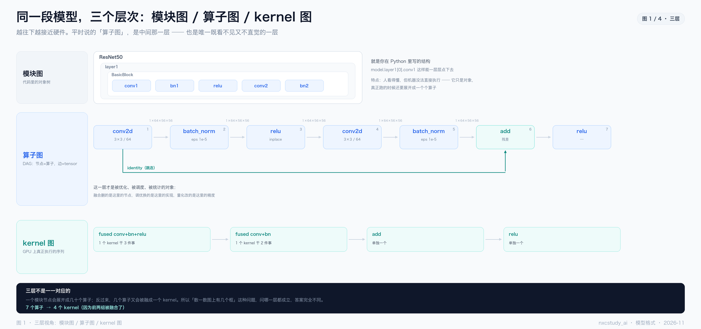
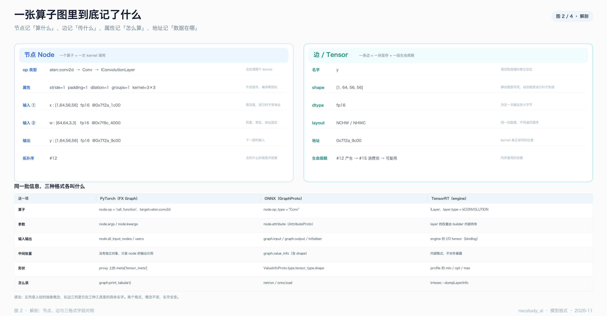
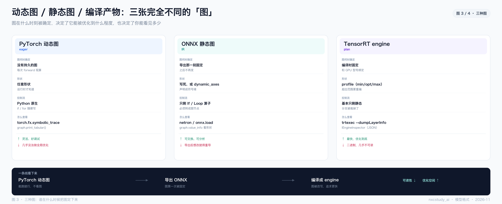
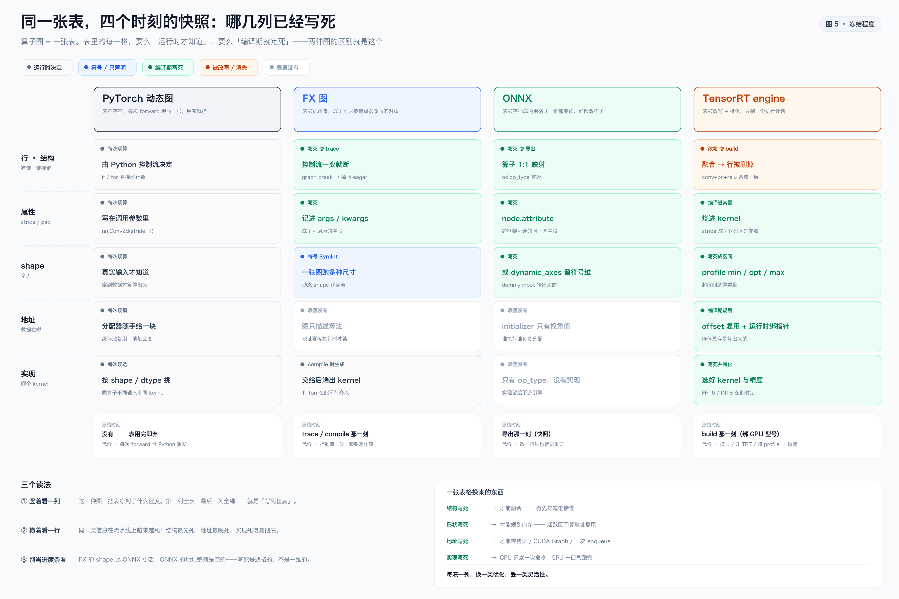
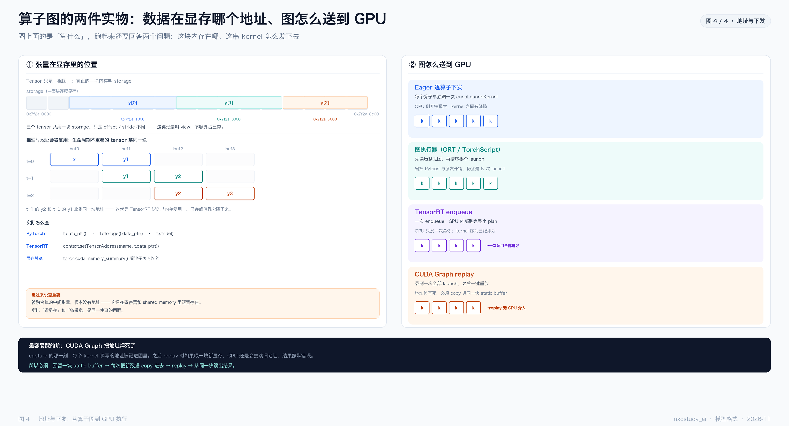

| 图 | 回答的问题 | 一句话结论 |
|---|---|---|
| 图 1 | 「图」到底指哪一层 | 模块图 → 算子图 → kernel 图，三层不对应 |
| 图 2 | 一张图里记了什么 | 节点、边、属性、地址，四种信息 |
| 图 3 | 三种图差在哪 | 图被写死的时刻不同，可优化程度就不同 |
| 图 4 | 数据在哪、怎么送去算 | storage 与 view，四种下发方式 |
| 图 5 | 这张表冻到了什么程度 | 结构先死、地址最晚死；逐格写死，不是进度条 |
-图N-标题 区分。
y = relu(conv(x) + x) 这一行代码，拆开就是四个算子、三条边：
x ──▶ conv2d ──▶ add ──▶ relu ──▶ y
▲ │
└─────────┘ （x 也直接进 add，这就是残差）
把算子当节点、把 tensor 当边，按依赖连起来，就得到一张有向无环图（DAG）。DFS 遍历一遍就是合法的执行顺序。
为什么要有图？因为只有「图」这个形态，才能被整体分析：
| 想做的事 | 需要图吗 | 说明 |
|---|---|---|
| 算子融合 | 是 | 得知道谁接谁，才能把 conv+bn+relu 合成一个 |
| 内存复用 | 是 | 得知道每个 tensor 的生死区间（图上算得出来） |
| 量化 | 是 | 得逐层插量化 / 反量化节点 |
| 逐行调试 | 否 | eager 模式反而是优势 |
这就是「动态图灵活、静态图能优化」的根本原因：图存不存在，决定了优化器有没有东西可以分析。
| 算子 | 典型来源 | 能不能融 | 为什么 |
|---|---|---|---|
element-wiserelu / add | 激活、残差 | 最容易 | 逐元素独立，能塞进上一个 kernel 的循环 |
| conv / matmul | 主干 | 常和 BN、bias 融 | 邻近的缩放与平移可以并进权重 |
reductionsoftmax / sum | 归一化 | 难 | 要跨元素汇总，中间结果必须落地 |
| reshape / transpose | 维度变换 | 不用融 | 多数只是元数据操作，本来就不搬数据 |
为什么 element-wise 最容易融合？因为它每个元素独立算，前后没有依赖，编译器可以把它的计算直接「塞进」上一个 kernel 的循环体里 —— 这就是 conv+bn+relu 能变成一个 kernel 的全部原因。

同一个模型，有三种完全不同的「图」，很多人说的不是同一层。
① 模块图是对象树：model.layer1[0].conv1。它描述「有哪些零件」，不是「怎么算」。你 print(model) 看到的就是这一层。
② 算子图是 conv2d → bn → relu → conv2d → bn → add → relu，每个节点带 shape、dtype、地址。融合删的是这里，调优换的是这里，量化改的是这里。
③ kernel 图是 GPU 上真跑的，融合后 7 个算子可能只剩 4 个 kernel。
为什么会混？因为你平时接触的三个工具分属不同层：print(model) 给的是模块图，netron 打开的是算子图，nsys 时间轴上看到的是 kernel 图。同一个模型，三个工具给你三张完全不同的「图」。

节点记四件事：op 类型（aten::conv2d → Conv → IConvolutionLayer）、属性（stride / padding / groups）、输入输出（带 shape、dtype、地址）、拓扑序。属性不进显存——它们是编译期固化进 kernel 的常量。
边就是 tensor，记五件事：shape、dtype、layout、地址、生命周期。生命周期是内存复用的依据：#12 产生 → #15 消费完，之后这块地址就能给别的 tensor 用。
| 这一项 | PyTorch（FX） | ONNX（GraphProto） | TensorRT（engine） |
|---|---|---|---|
| 算子 | node.op / node.target | node.op_type | ILayer，layer.type |
| 参数 | node.args / kwargs | node.attribute | builder 内部持有 |
| 输入输出 | node.all_input_nodes | graph.input/output | I/O tensor（binding） |
| 中间张量 | 只是 node 的输出引用 | graph.value_info | 内部隐式，不暴露 |
| 形状 | node.meta['tensor_meta'] | ValueInfoProto | profile 的 min/opt/max |
| 怎么读 | print_tabular() | netron / onnx.load | --dumpLayerInfo |
四类来源，从「没有图」到「图被改写」，复杂度递增。
y = model(x) 逐行执行，执行完就没了。训练时 PyTorch 会顺手建一张 autograd 图（为了反向传播），但推理时 torch.no_grad() 连这个都关了。所以 eager 模式下你没有图可看。
import torch, torch.fx as fx
class Block(torch.nn.Module):
def __init__(self):
super().__init__()
self.conv = torch.nn.Conv2d(3, 64, 3, padding=1)
self.bn = torch.nn.BatchNorm2d(64)
self.relu = torch.nn.ReLU()
def forward(self, x):
return self.relu(self.bn(self.conv(x)))
gm = fx.symbolic_trace(Block())
print(gm.graph)
输出就是这个模型的算子图：
graph():
%x : [#users=1] = placeholder[target=x]
%conv : [#users=1] = call_module[target=conv](args = (%x,), kwargs = {})
%bn : [#users=1] = call_module[target=bn](args = (%conv,), kwargs = {})
%relu : [#users=1] = call_module[target=relu](args = (%bn,), kwargs = {})
return relu
想要表格版，用 gm.graph.print_tabular()，会打出 opcode / name / target / args / kwargs 五列。
注意 call_module 与 call_function 的区别：前者指向一个子模块（target=conv），后者直接指向函数（target=torch.relu）。融合与改写通常按 call_function 做，因为它的语义最明确。
GraphModule 是可执行的 —— gm(x) 会按新图跑。所以它是改写图的入口：量化、算子替换、插桩，都从改这张图开始；遍历用 gm.graph.nodes，每个节点带 op / target / args。
Proxy 跑一遍，遇到 if x.sum() > 0 这种依赖真实数值的分支就没法录（叫 graph break）。torch.compile 的 Dynamo 就是来解决这个的。
torch.onnx.export(model, dummy_input, "model.onnx",
input_names=["x"], output_names=["y"],
opset_version=17)
它做的事：跑一次 trace → 每个 PyTorch 算子 1:1 映射成 ONNX 算子 → 把形状写进 value_info。
它不做的事：融合、kernel 选择、内存规划。导出器的目标是「语义正确」，不是「性能好」。
trtexec --onnx=model.onnx --fp16 \
--dumpLayerInfo --exportLayerInfo=layers.json \
--profilingVerbosity=detailed
layers.json 里能看到每个 layer 的类型、输入输出 tensor、精度、耗时。这是唯一能看到「融合之后有几层」的办法——图上是 7 个算子，这里剩 4 层，就说明融合生效了。
| 手段 | 要可 trace 吗 | 控制流 | 产物 |
|---|---|---|---|
symbolic_trace | 是 | 无（会断） | FX GraphModule |
torch.export / Dynamo | 是（但更强） | 部分（可导出为节点） | ExportedProgram |
torch.onnx.export | 是 | 弱 | .onnx |
| TensorRT | 吃 onnx | 基本没有 | .plan |
选择顺序：只想看看结构 → FX；要交付 → ONNX；要极致性能 → 交给 TensorRT。别反过来，也别指望导出器替你优化。

| PyTorch 动态图 | FX 图 | ONNX 静态图 | TensorRT engine | |
|---|---|---|---|---|
| 图何时定 | 每次 forward 现算 | trace 那一刻 | 导出那一刻 | build 那一刻，绑 GPU |
| 形状 | 任意 | 可符号 SymInt | 写死 / dynamic_axes | profile 区间 |
| 控制流 | Python 原生 | 一断就退回 eager | 只剩 If/Loop | 基本只剩静态 |
| 能否优化 | 几乎不能 | 可整图改写 | 有限 | 全图重写 |
| 可读性 | 高（就是代码） | 高（还是 Python） | 高（netron） | 低（二进制） |
| 何时作废 | —— | graph break | 改结构要重导 | 换卡 / 换版本 / 超 profile |
图 3 只画了三张，因为 FX 不落地——它是活在进程里的一张表，不产出文件、也不进交付链。一旦要「交出去」，它必然先变成 ONNX。
动态图适合还没定型的模型：改一行立刻生效。代价是每次 forward 都要重走一遍 Python 解释器 + 算子派发。
FX 适合「被改写」：它本身不是终点，而是编译器的工作台——torch.compile、量化、剪枝、图切分，都是「抓一张 FX 表 → 改它 → 再生成代码」。
ONNX适合交付和交换：唯一「任何框架都能读」的格式，但它是快照，导完就固定。
engine适合最终部署：图在编译期被彻底改写，运行时照着跑。代价是它不认识「新东西」——换卡、换 TRT 版本、超出 profile，都得重编。
上一页问「图长什么样」，这一页只问一件事：表里的每一格，是活的还是死的。 灰＝运行时才知道，蓝＝只声明符号，绿＝编译期写死，橙＝被改写，白＝表里根本没这一项。

① 竖着看一列——这种图冻到了什么程度：最左整列灰，最右整列绿，中间是过渡带。
② 横着看一行——谁先死、谁后死：结构最先死（engine 里不是冻结，是行被删掉），地址最晚死（FX / ONNX 里整列空白），实现死得最彻底（ONNX 里连这一列都不存在）。
③ 别当进度条看——写死是逐格的：FX 的 shape 比 ONNX 更活（SymInt 符号化），ONNX 的地址整列是空的。
冻住结构才能融合；冻住属性才能常量折叠、stride 特化；冻住 shape 才能做全局内存规划（按活跃区间算地址复用）；冻住地址才有零拷贝和 CUDA Graph；冻住实现，CPU 才只发一次命令、GPU 一口气跑完。写死的顺序，就是优化能上场的顺序。

t = torch.randn(4, 8, device="cuda") # 一块 storage v = t[1:3] # 一个 view，不新占显存 t.data_ptr() # 第一个元素的地址 t.storage().data_ptr() # 整块 storage 的起点 t.storage_offset() # 相对起点的偏移 t.stride() # 每维走一步跨多少元素
v.data_ptr() 不等于 t.data_ptr()，但 v.storage().data_ptr() 等于 t.storage().data_ptr()——它们共用一块内存。
这也是 transpose / slice 几乎不耗时的原因。代价是不连续的 tensor 传给某些 kernel 会悄悄触发一次 copy。
PyTorch 不每次 cudaMalloc，而是维护一个缓存分配器：释放的块回池子，下次同尺寸直接复用（t=1 的 y2 就拿到了 t=0 的 y1 的位置）。TensorRT 把这件事提前到编译期算好，显存峰值就这么降下来。
context.set_tensor_address("x", x.data_ptr()) 只是告诉引擎去哪儿读写，不复制数据。所以你必须自己保证这块内存在推理期间有效。
图在 CPU 上，算在 GPU 上，中间这一步是下发。四种方式，CPU 的参与程度依次降低。
| 方式 | 一次 forward 发生什么 | CPU 开销 |
|---|---|---|
| Eager 逐算子 | 每个算子：派发 → 选 kernel → cudaLaunchKernel | 最大，kernel 间有缝隙 |
| 图执行器 | 先遍历整图排好序，再挨个 launch | 省掉 Python 开销，仍是 N 次 |
| TensorRT enqueue | 一次 execute_async_v3，GPU 内部跑完 plan | 只发一次命令 |
| CUDA Graph replay | 录制一次全部 launch，之后一键重放 | 几乎为零 |
「整图执行」不等于「一次 kernel」。ORT 的图执行器仍然是 N 次 launch，省的是 CPU 侧的 Python 和派发；只有 TensorRT 的 enqueue 和 CUDA Graph 才真的做到「CPU 只发一次」。
g = torch.cuda.CUDAGraph()
static_in = torch.empty_like(x)
with torch.cuda.graph(g):
static_out = model(static_in) # ← 此刻所有地址被记进图里
for _ in range(100):
static_in.copy_(new_x) # 必须 copy 进同一块
g.replay() # 否则 GPU 还去读旧地址
capture 那一刻，每个 kernel 读写的地址被固化。replay 时喂一块新显存，GPU 照样去读旧地址——不报错，结果静默错误。这是 CUDA Graph 最难查的一类 bug。
| 想看什么 | 用什么 | 备注 |
|---|---|---|
| PyTorch 算子图 | fx.symbolic_trace + print_tabular() | 最快，控制流会断 |
| ONNX 图长什么样 | netron 拖进去 | 直观，能看 shape |
| ONNX 的 shape 对不对 | onnx.shape_inference | 补 value_info |
| TRT 融合后几层 | trtexec --dumpLayerInfo | 唯一能看到融合结果 |
| 真正下发的 kernel | Nsight Systems | 图上没有的，时间轴上有 |
最后两行最容易被忽略：图是「应该怎么算」，时间轴是「实际怎么算」。两者对不上时，说明发生了融合——这正是验证优化有没有生效的地方。
| # | 误解 | 实际 |
|---|---|---|
| 1 | print(model) 是计算图 | 那是模块树，不是算子图 |
| 2 | eager 模式没有图 | 训练时有 autograd 图；推理时确实没有 |
| 3 | 一个算子 = 一个 kernel | 融合后多个算子共用一个 kernel |
| 4 | 图上的 tensor 都有地址 | 被融合掉的中间结果没有地址 |
| 5 | 整图执行 = 一次 kernel | ORT 仍是 N 次，只有 TRT/CUDA Graph 是一次 |
本文是「图」的解剖，其余是上下文：
2026-11-推理加速技术路线全景（上位视角：三堵墙、五条路） |
2026-06-ONNX与TensorRT推理加速（ONNX 与 TRT 的分工） |
模型格式转换笔记（binding / set_tensor_address 实操） |
2026-09-PyTorch执行原理与torch.compile-CUDA-Graph-TensorRT（下发细节）
一张算子图 = 节点（算什么）
+ 边（传什么：shape / dtype / layout / 地址 / 生命周期）
+ 属性（怎么算：stride / padding / groups）
+ 拓扑序（先算谁）
三层 模块图（代码结构）→ 算子图（被优化）→ kernel 图（真执行）
四张图 动态图（每次现算）→ FX（可改写的表）→ ONNX（导出固定）→ engine（编译改写）
冻结 结构先死 → 属性 → shape → 地址最晚死 → 实现死得最彻底；每冻一列，换一类优化
地址 storage 是实体，tensor 是视图；融合后中间结果没有地址
下发 eager 逐个 launch → 图执行器排序 → TRT 一次 enqueue → Graph 一键 replay